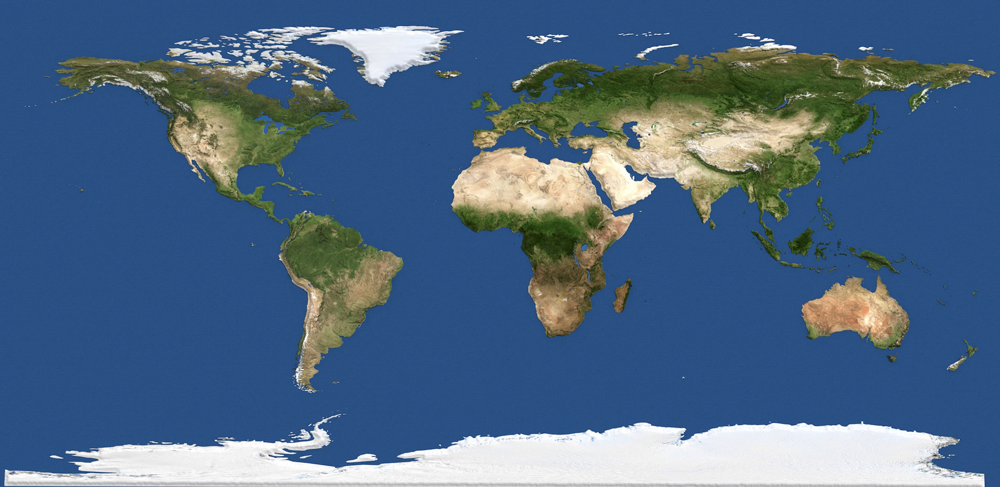

Match each neurotoxicant to a source of exposure in the environment for a child/mother.
Click on a card from each row to try a match. A correctly matched pair is highlighted green.
For hints, hover over pins on the map to learn about case studies described in Environmental Neurotoxicants and Developing Brain (Miodovnik 2011). The background pictures for the neurotoxicant cards are grouped by the broad category they belong to: HEAVY METALS, INDUSTRIAL CHEMICALS & PESTICIDES, and ENDOCRINE DISRUPTORS.
Note that the case studies and the source cards are not meant to provide exhaustive lists; only a subset of case studies (not to mention other kinds of research) and possible environments sources are represented. Likewise, the 8 "neurotoxicants" below are more well-known candidates for negatively impacting brain development early in life and for associations with neurological, cognitive, or behavioral issues. But as Miodovnik writes, "Only about 200 chemicals out of more than 80,000 registered with the United States Environmental Protection Agency have undergone extensive neurotoxicity testing, and many chemicals found in consumer goods are not required to undergo any neurodevelopmental testing.
